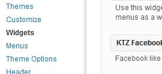
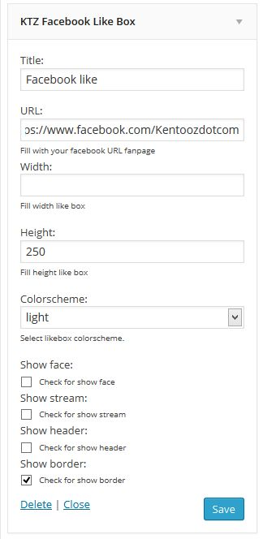
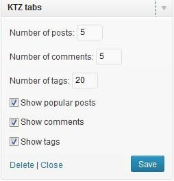
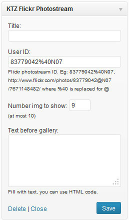
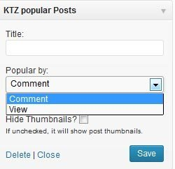
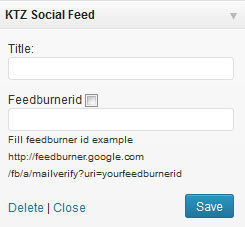

1. widget
Where widget in wordpress? Go to "appearance -> widget" you can see widget kentooz(KTZ) and default widget.

3. KTZ Facebook like box
KTZ Facebook like box is usefull widget for display your fanpage in sidebar. Before read tutorial please see image below:

- URL = Fill your facebook fanpage url. For example: http://facebook.com/kentoozdotcam
- Width = Leave blank for get responsive facebook layout.
- Height = Fill with height your facebook like box layout.
- Colorscheme = Select facebook colorsheme for white background use light, for dark backround use dark colorscheme.
- Show face = Check box if you will show face your member in facebook like box
- Show stream: = Check box if you will show stream in facebook like box
- Show header: = Check box if you will show header layout in facebook like box
- Show Border: = Check box if you will show border in facebook like box.
4. KTZ Recent posts
Default Recent post
KTZ Recent Post is usefull widget for display recent post in sidebar or in magazine page. Before read tutorial please see image below: 
- Number of posts to show = This setting for number post for display in recent post.
- Style box = This is style you can choice in default recent post widget..
- Fill with category id = This id your category, select category what you want display in recent post widget or select all if you want display all category.
6. Tabs
KTZ Tabs is usefull widget tabs for display tabs for popular post, recent comment and tags in sidebar. Before read tutorial please see image below:

- Number of posts = This setting for number popular post for display in tabs.
- Number of comments = This setting for number comment for display in tabs.
- Number of tags = This setting for number tags for display in tabs.
- Show popular posts = Check box if you will display popular post.
- Show comments = Check box if you will display comments.
- Show tags = Check box if you will display tags.
6. Flickr
KTZ flickr photostream is usefull widget for display recent photos from flickr in widget. Before read tutorial please see image below:

7. Popular
KTZ popular post is usefull widget for display popular post with rainbow style in sidebar. Before read tutorial please see image below:

- Number of posts to show = This setting for number post for display in recent post.
- Style box = This is style you can choice in default recent post widget..
- Fill with category id = This id your category, select category what you want display in recent post widget or select all if you want display all category.
Please click button below to see post format tutorial.
Layout.
8. Social feed
KTZ socialfeed is usefull widget for display social button and feedburner form in sidebar or in magazine page. Before read tutorial please see image below:
